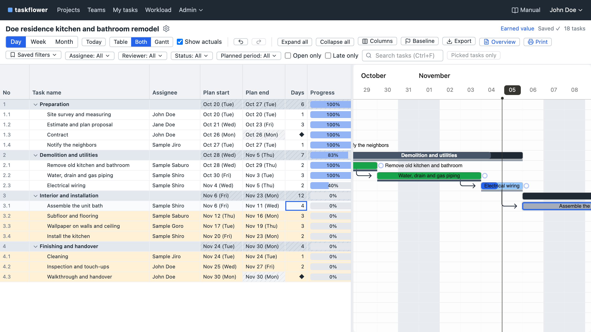
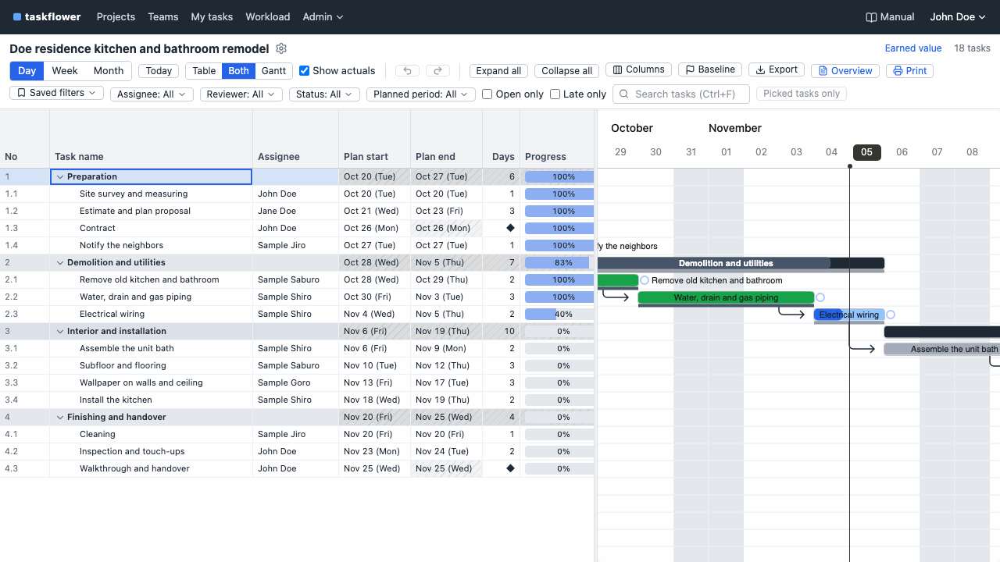

The WBS (a hierarchical list of tasks) sits next to the Gantt chart, which shows the schedule as bars. When you extend a task, the tasks after it move automatically. It runs on your own server, for a planned one-time price of ¥30,000.
Start it with docker compose up -d. Every feature works on an internal network cut off from the internet.

Right after extending “Assemble the unit bath” by 2 days. Check the 6 tasks that will move and press “Move”: they move together, and the changed rows are highlighted.
The expensive tools had far too many features and added up every month. The affordable ones put the WBS and the Gantt chart on separate screens, or made you enter tasks one by one in web forms. Excel is easy to type in, but every time a task slips you retype every date after it. And for each new site or project, typing the usual steps from scratch took time.
Since there was no such tool, we made one. A one-time-purchase schedule tool that is not too expensive and does not fall short.

Change the days from 2 to 4 and press Enter. Check the 6 tasks and their dates, then press Enter again (Move): they move together. Ctrl+Z puts them back.
Read the manualThe same content as the manual included in the product. Features not in the manual do not exist in taskflower.
| Architecture | A single Docker container. Database: SQLite (default), PostgreSQL or MySQL |
|---|---|
| Installation | Unzip the Zip for your server's CPU (amd64 / arm64) → docker load -i image.tar.gz → cp .env.example .env → docker compose up -d |
| Platforms | Linux / Windows (WSL2 + Docker Desktop) / macOS. amd64 and arm64. Docker Engine 24 or later, Docker Compose v2.24 or later |
| Recommended scale | Up to 30 people working at the same time, 500 users and 3,000 tasks in one project (checked with 2 CPU cores and 2 GB of memory) |
| Browsers | The latest Chrome, Edge or Firefox (on a PC, a screen at least 1280px wide). Tablets can view and enter actuals |
| Network | No outbound connections. Screen components, fonts and the manual are included. Japanese holidays for 2025–2027 are preset |
| Language | Japanese, English (US) or English (UK), one for the whole system. Dates follow the language (Nov 5, 2026 / 5 Nov 2026) |
| Sign-in | ID and password (argon2). Locked for 15 minutes after 10 failures |
| Data and backup | Stored in a Docker volume. taskflower backup backs up while it is running |
| Licenses | Included open-source software is MIT, Apache-2.0 and similar |
| Free trial | Full version | |
|---|---|---|
| Tasks | Up to 30 per project | Unlimited |
| Projects | Up to 3 | Unlimited |
| Users and external people | Unlimited | Unlimited |
| REST API | × | ○ |
| GitLab integration | 1 project, up to 30 updates | ○ |
The data you enter in the free trial can be used as is: just switch to the full version's image.
The free trial will be available after launch (get notified)Charged in US dollars. The amount on your card statement varies with the exchange rate.
A product for use in the business of companies and sole proprietors.
10 people using it for 3 years still pay ¥30,000. No extra charge when your team grows.
Bug-fix versions: for 1 year from the date of purchase
More questions (the “Frequently asked questions” page of the manual)
On the purchase screen, we ask you to agree to the following.
See the terms and disclaimer and the license terms for details.
Buy the full version (preparing to start sales)